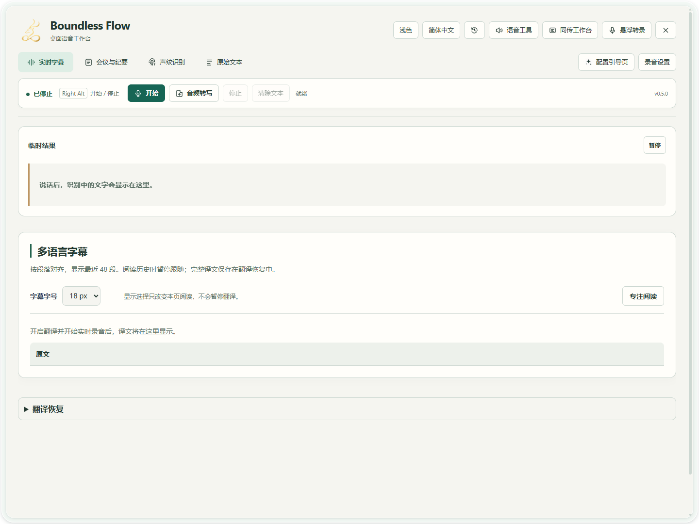
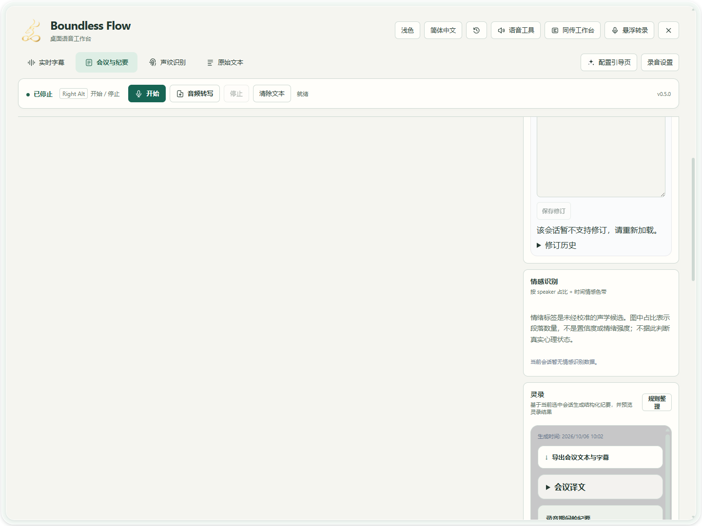
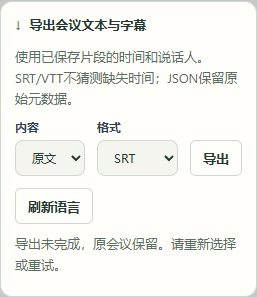

场景教程
会议记录、校对与导出
把录音变为可复核的会议记录，再交付纪要。
你能得到什么
保存会议会话、修订人物和原文，并导出文本或字幕。
开始前准备
- 先跑通转录，再试录并回听，确认所选输入设备包含所有需要记录的讲话人。当前流程不会自动抓取会议应用正在播放的声音；耳机能听到对方不等于录音里有对方。
- AI 纪要需单独配置可用的 LLM 服务；多语言导出需事先保存相应译文。
逐步操作
- 01
开始会议前，试录并检查
先在「配置引导页」第一步选择「输入设备」，点击「开始 5 秒试录」，让每种需要记录的声音来源轮流讲话并回听。远程会议须确认对方声音也在录音里；没有合适输入时先处理输入来源。随后用短讲话验证原文和需要的译文，再点击「开始」正式录音。会议中定期查看录音状态；会议结束点击「停止」并等待收尾。

真实软件界面 · 点击放大；图中示例数据不代表你的结果 - 1先从配置引导开始。
- 2配置完成后点击开始录音。
- 3停止后在这里查看会议记录。
- 02
选择本次会话，校对发言人和段落
进入「会议与纪要」，选择刚结束的会话。逐段核对文字和 Speaker 标签。先等临时文字定稿；相邻段出现相同发言时，回听各段对应时间确认，不要仅因文字相同就删除一段。单段名称用「单个修改」；确认同一人的后续段落后，再用「以下统一修改」。不要仅凭候选标签认定身份。

真实软件界面 · 点击放大；图中示例数据不代表你的结果 - 03
生成并复核纪要
配置可用的纪要 LLM 后，生成本次会话的纪要。对照原文核对摘要、决策、行动项、负责人和日期；没有说出的信息不要保留为确定事实。

真实软件界面 · 点击放大；图中示例数据不代表你的结果 - 1核对摘要是否符合会议原文。
- 2核对行动项、负责人和日期。
- 04
选择语言和格式，导出后打开检查
在会议导出中选择原文或已有目标译文、文本或字幕格式，再点击导出并选择保存位置。导出不会补译缺失段落；需要补齐时先使用「翻译恢复」。

真实软件界面 · 点击放大；图中示例数据不代表你的结果 - 1选择原文或已有译文。
- 2选择字幕或文本格式。
- 3导出后选择保存位置。


已有会议录音，从文件导入
不用重新播放整场会议录音。准备最长 60 分钟、不超过 256 MiB 的 WAV，点击主窗口「音频转写」，用「选择文件」选中录音。
- 本地识别请选择「本地模型」，先在配置引导中保存并选好识别模型。使用服务识别时切到「API 服务」，选择已保存的 OpenAI 兼容或 Qwen Audio 3.1 连接。连接地址和密钥只在配置引导中保存。
- 中文录音选择「中文」，不确定语言时选择「自动识别」。核对显示的模型、服务主机和上传提示，再点击「开始转写」。API 模式会上传录音，服务可能计费。
- 等待转写完成并归档，在「会议与纪要」中打开新会话，接着按本页步骤校对、生成纪要和导出。途中可点击「取消转写」并等待；显示「保存中」时等待归档结束。
Qwen 每段不超过 3 分钟，OpenAI 兼容服务每段不超过 5 分钟，由软件自动分段。为识别准备的音频是单声道 16 kHz，原录音保留。API 导入的时间是分段边界，尚不采用服务返回的词级时间戳或说话人标签；未识别人物需要人工复核。

- 1点击「选择文件」，选中自己的 WAV。
- 2选择已保存连接，核对下方模型和服务主机。
- 3选择录音语言，这里不是翻译目标语言。
- 4阅读上传提示后，点击「开始转写」。
收起区块，集中查看实时转录
点击区块标题可收起或展开讲话人、上下文、实时转录、纪要和历史记录。收起不会清空已输入的内容，也不会停止录音。实时转录内容变长时，在该区块内使用滚动条查看较早或较晚的发言；其它区块仍可分别操作。
怎么知道成功
所选会话与会议时间对应；导出文件能打开；人物、行动项和日期已与原文核对。
遇到问题
会话没有完整内容
确认已停止并完成录音收尾，检查选中的会话及输入音频。切换视图不等于停止录音。
纪要生成失败
检查专用于纪要的服务、模型和鉴权，再用短会话重试；翻译成功并不证明纪要配置正确。
导出缺少译文
先检查会话中是否已有该语言，补齐失败翻译后再导出。
导入录音转写失败
查看文件转写问题排查，核对已保存的服务、WAV 格式与限制，以及账号的工作区和模型权限。失败或在归档前取消时，没有已完成的会议记录可供校对。